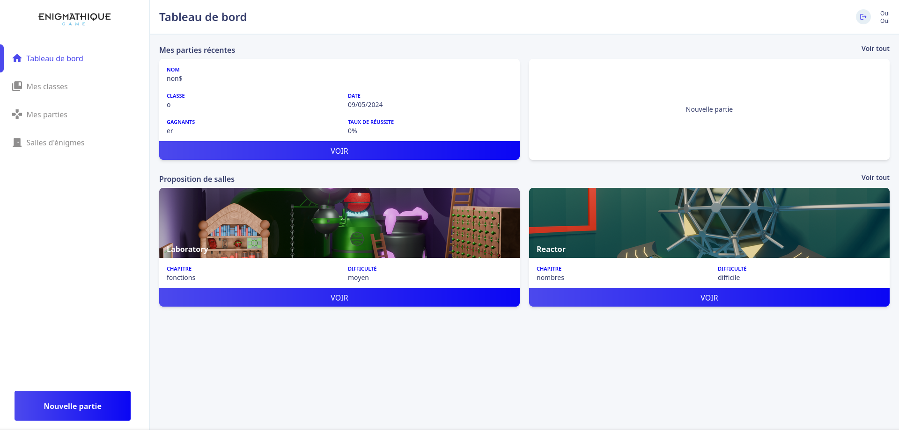
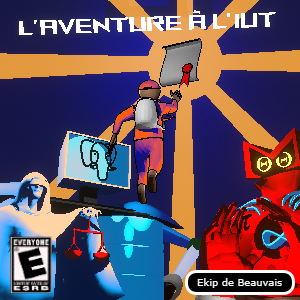

-

SpotAPI
- group : 2
- schedule : 2S
- school
Ce projet avait pour but d'apprendre à utiliser une API. Pour cela, nous
avons utilisé
l'API de Spotify pour récupérer des informations sur des artistes, des
albums et des
chansons. De plus nous avons développé un système de favoris pour sauvegarder les recherches
de l'utilisateur dans le local storage. Enfin, nous avons utilisé un
endpoint de l'API pour
permettre à l'utilisateur de contrôler sa musique sur son compte Spotify
depuis notre site.
-

Enigmathique
- group : 8
- schedule : 3M
- school
Pour ce projet, nous avons développé un site web ludo-éducatif pour les élèves de seconde.
Le but était de leur permettre de réviser les mathématiques de manière
ludique. Pour cela,
nous avons développé un jeu de type "escape game" où les élèves doivent
résoudre des énigmes
mathématiques pour progresser. De plus, les énigmes sont affichées dans une salle
3D pour
rendre l'expérience plus immersive. Enfin, nous avons aussi développé une interface pour les
professeurs pour qu'ils puissent créer leurs classes et suivre la progression de leurs
élèves.
Le tout est en temps réel grâce à l'utilisation de websockets.
À la fin du projet, nous avons présenté notre site devant la promotion et les professeurs et
avons gagné le prix du meilleur projet.
-
Carnet de stage
- group : 6
- schedule : 1M
- school
Le but de ce projet était de reprendre un projet existant afin de
l'améliorer. Nous avions
donc
un back-office destiné au maître de stage, une application
android destinée aux étudiants et
une base de données.
Ces trois éléments fonctionnaient déja mais comportaient de nombreux problèmes de
performance, de sécurité et d'ergonomie.
Pour cela, nous avons étudié le code existant puis la base de données existante et avons
identifié les points à améliorer.
Nous avons ainsi appliqué ces améliorations. Nous avons aussi essayé de rendre l'application
plus ergonomique, rapide et
robuste.
-

L'aventure à l'IUT :
L'Incroyable Université
Technologique
- group : 4
- schedule : 4J
- school
Ce projet était un jeu vidéo réalisé dans le cadre d'une Game Jam parmis
les étudiants de
l'IUT. Le thème était "Monde fantastique" et la contrainte était
"Gardez le rythme". Nous avons donc realisé un jeu composé de mini-boss
où le joueur doit garder le rythme pour gagner. Nous avons pris l'univers de l'IUT en
choisissant des
professeurs de l'IUT pour les intégrer dans le jeu en tant que mini-boss. À la fin des 4
jours
de développement, nous avons présenté notre jeu devant toute la promotion. Nous
avons gagné le
prix du meilleur jeu de la Game Jam.